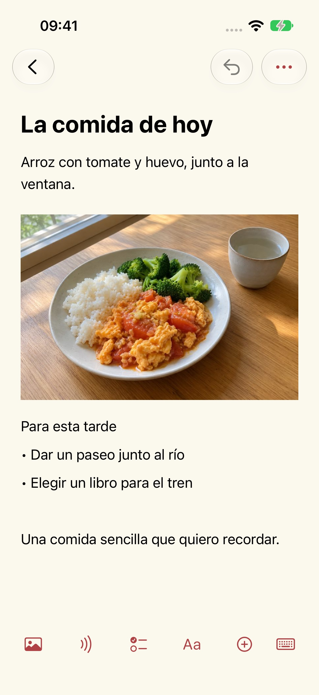
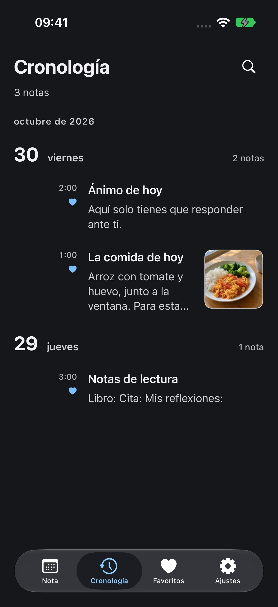

Ayuda y soporte
Actualizado: 2026-10-29
Por qué hice Mowyns
Buscaba una herramienta para tomar notas que fuera sencilla, útil y completamente gratis. Después de mucho buscar, seguía sin encontrar una que me encajara. Así nació Mowyns, y lo uso en mi día a día.
Hoy tiene su propia página
Quería abrir mi cuaderno y encontrarme con el día de hoy. El calendario muestra las notas de cada fecha, así que lo de ayer se queda en ayer. Para volver a otros días, basta con elegir una fecha o recorrer la cronología. Las notas anteriores siguen ahí, sin amontonarse en el presente.




Nota
Haz una foto de la comida y añade unas palabras. Apunta algo que te gustaría hacer. Puedes reunir texto, fotos y grabaciones en una misma nota.
Fecha
Antes de un viaje, guarda los datos del tren, el asiento, las capturas de los billetes y los lugares que quieras visitar en la fecha correspondiente. Al abrir ese día, tendrás el plan a mano. Unos días de notas pueden convertirse en un itinerario sencillo.
Calendario
En la parte superior de la lista del día, desliza hacia abajo una vez para ver el calendario y otra vez para abrir la búsqueda rápida. Con el calendario cerrado, desliza la fecha a izquierda o derecha para ir al día siguiente o anterior.
Apariencia
Elige un color de tema y una apariencia clara u oscura. Ajusta el tamaño del texto y el interlineado a tu gusto.
Nueva nota
Elige «Nueva nota» e introduce un título y el texto. La barra inferior del editor permite añadir fotos, audio, listas, tablas y archivos.
Copias y migración
Las notas se guardan en este dispositivo. En Ajustes → Gestión de datos → Copias y migración puedes exportar e importar copias normales o cifradas. Guarda tus propias copias; no hay sincronización automática.
Transcripción de audio
La app pide acceso a la cámara o al micrófono solo al hacer fotos, escanear o grabar. Tú eliges las fotos y los archivos con los selectores del sistema. Denegar estos permisos no impide escribir notas de texto. La transcripción requiere permiso del sistema para reconocer voz y se realiza solo en el dispositivo. Si el dispositivo o el idioma no es compatible, se conserva el audio y se indica que la transcripción no está disponible. La app no recurre al reconocimiento en la nube. Puedes revocar los permisos en los ajustes del sistema.
Eliminadas recientemente
Abre Ajustes → Gestión de datos → Eliminadas recientemente para restaurar una nota. Tras eliminarla definitivamente, necesitarás una copia que hayas exportado antes. El desarrollador no guarda copias de tus notas.